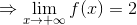
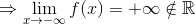
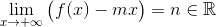
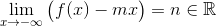
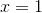

Asimptote ale graficului unei funcții
Fie  un interval de numere reale,
un interval de numere reale,  o funcție elementară și
o funcție elementară și  un punct de acumulare al mulțimii
un punct de acumulare al mulțimii  . Atunci introducem următoarele drepte care pot însoți graficul funcției
. Atunci introducem următoarele drepte care pot însoți graficul funcției  .
.
ASIMPTOTE ORIZONTALE
Definiția LF12: Asimptote orizontale
- Dreapta , este asimptotă orizontală spre
 a funcției , dacă .
a funcției , dacă . - Dreapta , este asimptotă orizontală spre
 a funcției , dacă .
a funcției , dacă .
Adică dreapta este asimptotă orizontală spre sau spre a funcției dacă, atunci când  este suficient de mare (la ) sau suficient de mic ( la ), graficul funcției se "aproprie" de .
este suficient de mare (la ) sau suficient de mic ( la ), graficul funcției se "aproprie" de .
Observație:
Pentru a găsi asimptotele orizontale ale funcției , se caută limita funcției la și , dacă și sunt puncte de acumulare pentru mulțimea .
Exemple:
- Să se determine asimptotele orizontale ale funcției
 , .
, .
Rezolvare:
Atât , cât și sunt puncte de acumulare ale funcției date.
Funcția dată este o funcție rațională, având gradul numărătorului egal cu gradul numitorului. Conform celor prezentate la capitolul Limitele funcțiilor elementare, avem că:
.
.
Rezultă că dreapta este asimptotă orizontală spre și spre la graficul funcției date.
- Fie funcția , . Să se determine asimptotele orizontale ale funcției date.
Rezolvare:
Atât , cât și sunt puncte de acumulare ale funcției date.
Funcția dată este o funcție rațională, având gradul numărătorului mai mic decât gradul numitorului. Conform celor prezentate la capitolul Limitele funcțiilor elementare, avem că:
.
Deci funcția nu admite asimptote orizontale spre și spre .
ASIMPTOTE OBLICE
Definiția LF13: Asimptote oblice
- Dacă există și , atunci dreapta
 este asimptotă oblică a funcției spre și reciproc.
este asimptotă oblică a funcției spre și reciproc. - Dacă există și , atunci dreapta este asimptotă oblică a funcției spre și reciproc.
Observație:
O funcție nu poate avea simultan și asimptotă orizontală și asimptotă oblică. (Deci dacă se găsește o asimptotă orizontală a unei funcții, nu se mai caută și ecuația asimptotei oblice.)
Exemple:
- Să se caute asimptotele oblice pentru funcția , .
Rezolvare:
Am văzut că funcția nu admite asimptote orizontale spre sau spre . Căutăm asimptotele oblice ale acestei funcții, dacă acestea există.
Căutăm drepte de forma la , unde:
.
.
Atunci:
Deci dreapta  este asimptotă oblică spre la graficul funcției .
este asimptotă oblică spre la graficul funcției .
La fel se întâmplă și la .
În concluzie, dreapta este asimptotă oblică spre și spre la graficul funcției date.
- Să se determine asimptota oblică spre a funcției , .
Rezolvare:
Căutăm drepte de forma la , unde:
Rezultă că funcția nu are asimptota oblică la .
ASIMPTOTE VERTICALE
Definiția LF14: Asimptote verticale
- Dreapta este asimptotă verticală a funcției dacă cel puțin una din limitele laterale
 sau
sau  există și este unică. (Adică sau .)
există și este unică. (Adică sau .) - Dacă este sau , atunci dreapta se numește asimptotă verticală la stânga.
- Dacă este sau , atunci dreapta se numește asimptotă verticală la dreapta.
- Dacă limitele laterale ale funcției în sunt infinite (adică sau ), atunci dreapta se numește asimptotă verticală bilaterală.
Observație:
Se poate ca o funcție să nu aibă asimptote verticale, iar existența acestora nu depinde de existența asimptotelor orizontale sau a asimptotelor oblice.
Exemple:
- Fie funcția , . Să se determine asimptotele verticale ale acestei funcții, dacă există.
Rezolvare:
Cercetăm dacă dreapta  este asimptotă verticală.
Calculăm și .
- asimptotă verticală la stânga.
- asimptotă verticală la dreapta.
Fiind simultan asimptotă verticală la stânga și asimptotă verticală la dreapta, rezultă că dreapta este asimptotă verticală bilaterală.
- Să se determine asimptotele verticale ale funcției ,
 .
.
Rezolvare:
Reamintim graficul funcției logaritm în baza  .
.

Din grafic se poate observa că dreapta  este asimptotă verticală la dreapta la graficul funcției date.
este asimptotă verticală la dreapta la graficul funcției date.
Nu putem calcula limita la stânga în punctul  deoarece funcția nu este definită la stânga lui
deoarece funcția nu este definită la stânga lui  , domeniul de definiție al funcției fiind
, domeniul de definiție al funcției fiind  .
.